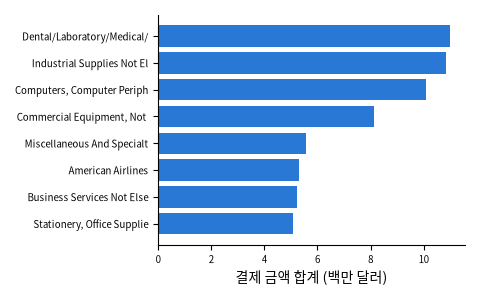

미국 오클라호마 주정부 공개 데이터: 주 정부 기관 · 대학 124곳의 2013-07 ~ 2014-06 법인카드 결제 442,458건 (기관 · 적요 · 금액 · 가맹점 · 날짜 · 가맹점 업종 코드 MCC). 카드 소지자 이름 열은 노트북에서 바로 지운다

| agency | memo | amount | vendor | date | mcc |
|---|---|---|---|---|---|
| UNIV. OF OKLA. HEALTH SCIENCES CENTER | SEE INVOICE # YXMP0601 EA | 123.5 | ADI SECURITY PRD OK | 2013-09-17 | ELECTRICAL PARTS AND EQUIPMENT |
| OKLAHOMA STATE UNIVERSITY | GENERAL PURCHASE | 749.5 | BLS Conduit | 2013-12-12 | COMPUTER SOFTWARE STORES |
| OKLA. CAREER AND TECHNOLOGY EDUCATION | ROOM CHARGES | 154 | COMFORT INN & SUITES | 2014-03-25 | COMFORT HOTEL INTERNATIONAL |
| OKLAHOMA STATE UNIVERSITY | 7 1/8X4.5X13.75 #12 GROCER BD | 74.83 | ULINE SHIP SUPPLIES | 2014-06-04 | CATALOG MERCHANTS |
| OKLA. PANHANDLE STATE UNIV. | Medical Terminology for He PCE | 13.16 | AMAZON MKTPLACE PMTS | 2014-01-16 | BOOK STORES |
| UNIV. OF OKLA. HEALTH SCIENCES CENTER | GENERAL PURCHASE | 11.97 | WAL-MART #0269 | 2013-08-27 | GROCERY STORES,AND SUPERMARKETS |
| 열 | 종류 | 빈칸 | 고유값 수 | 범위 · 대표값 |
|---|---|---|---|---|
| agency | 글자 · 범주 | 0 | 124 | 가장 흔한 값: OKLAHOMA STATE UNIVERSITY (26.2%) |
| memo | 글자 · 범주 | 0 | 88,749 | 가장 흔한 값: GENERAL PURCHASE (55.9%) |
| amount | 숫자 | 0 | 90,447 | -42,863.0 ~ 1,903,858.4 (평균 425) |
| vendor | 글자 · 범주 | 0 | 86,729 | 가장 흔한 값: STAPLES (3.4%) |
| date | 날짜 | 0 | 392 | 2013-04-17 00:00:00 ~ 2014-06-30 00:00:00 |
| mcc | 글자 · 범주 | 0 | 435 | 가장 흔한 값: STATIONERY, OFFICE SUPPLIES, P (5.6%) |
대부분 10~1,000달러, 가끔 아주 큰 결제
| ① 한 행 | 법인카드 결제 한 건 |
| ② 입력 X | 가맹점 이름 (글자) |
| ③ 출력 y | 비용 항목 (사무용품 · 출장 · 장비 · 통신 …) |
| ④ 평가지표 | 정확도 + 항목별 재현율 |
| ⑤ 기준선 | 가장 흔한 항목 |
문제를 정할 때 처음 채워 보는 칸들입니다. 여기서 끝이 아니라, 시험 데이터를 어떻게 나눌지 · 틀렸을 때 손해가 얼마인지 · 예측 시점에 정말 알 수 있는 값인지 같은 칸을 더 붙일수록 좋은 문제가 됩니다.
baseline (always 'other'): accuracy 21.2% vendor-name character n-grams: accuracy 92.2% vendors never seen in training: 23% of test, accuracy on them 81.7%
누가, 왜, 어떻게 만든 데이터인지 직접 확인해 보세요.
인턴 · 산학협력 · 프로젝트 주제를 고를 때 참고하세요 (일반적인 예시).